Understanding the Problem
We were contracted by OptiScreen to help them design the User Interarface and User Experience for their new superapp in order to encourage and help people develop healthy habits. In the context of the COVID 19 pandemic, at a time where it feels harder than ever, people need to take care of themselves. As a result, we used peoples feedback to give them the best possible design to meet their needs.
Results
We have found that in general, our survey participants noted that they needed the most help when it came to planning exercises, monitoring their sleep, planning meals and their screen time. As they are stuck at home it is easy to let oneself go and feel unmovtivated to take care of yourself in this way.
Research
We did research on the current super apps that deal with people’s health habits. We looked at mainly apps that deal with the physical health habits such as exercise, sleep tracking, and nutrition. Through the topics the apps focused on, we were able to create a survey and use ideas from those apps to help create ours.
Survey Results
The research we obtained helped create a better understanding of the problem. Research on super apps for healthy habits helped us make a survey. The survey was about certain aspects that affect people’s lives. The survey was related to three topics: physical health, mental health and nutrition. Most people said that they wanted to improve physical health the most. From the graph we can see that very little people participate in cardiovascular activities and not many people are involved in muscle training. Number of hours slept on average is about 8, which is a good amount. However, a lot of people spend time in front of a screen.
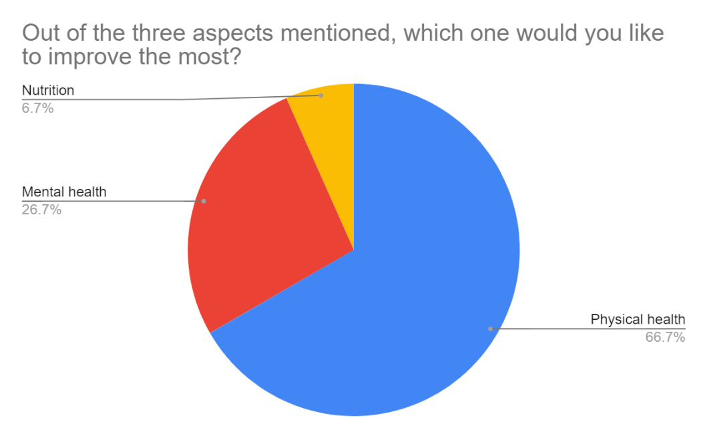
 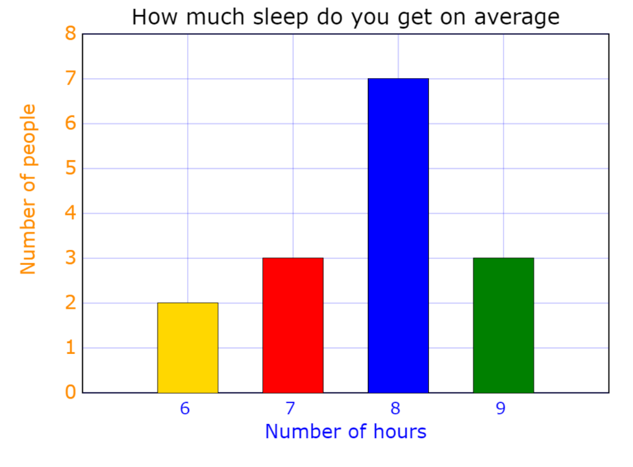
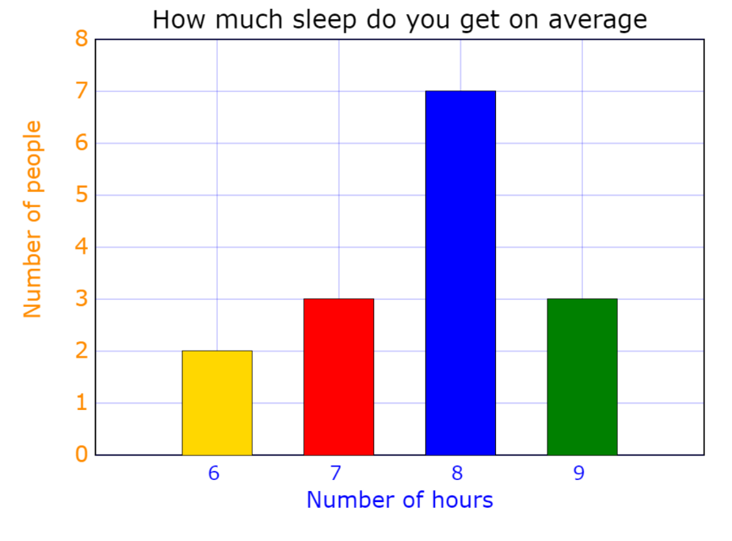
 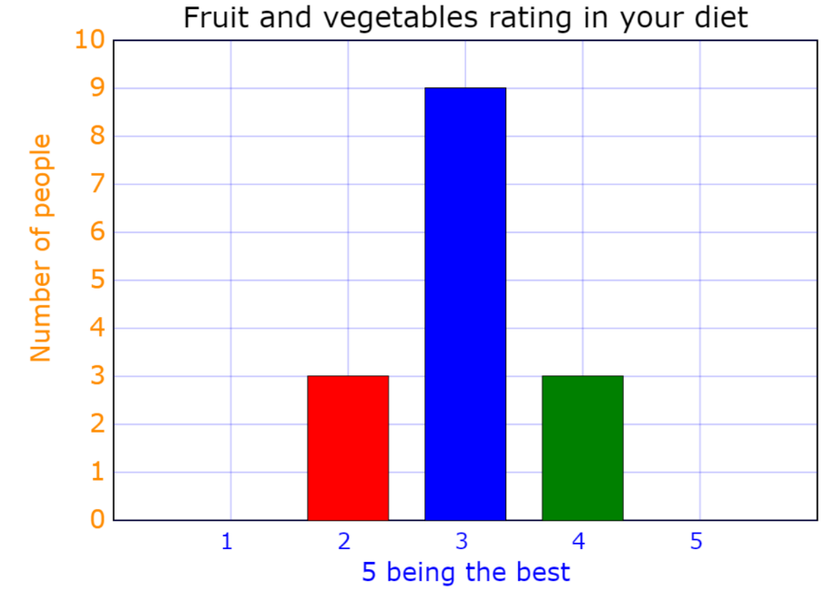
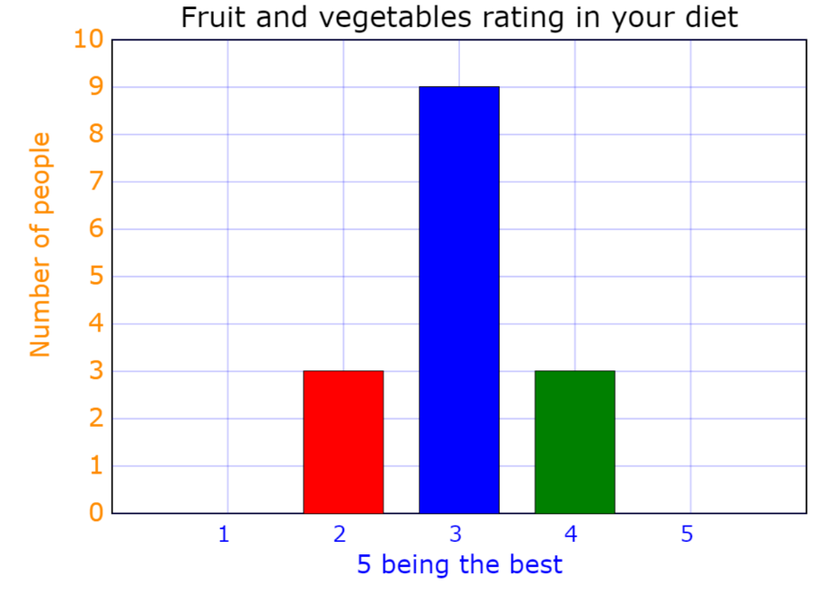
Personas
Rex is a programmer who has difficulties developing a sleeping routine. As a result of this, he stays up past his time limit and can’t go to sleep because he’s been looking at screens all day.
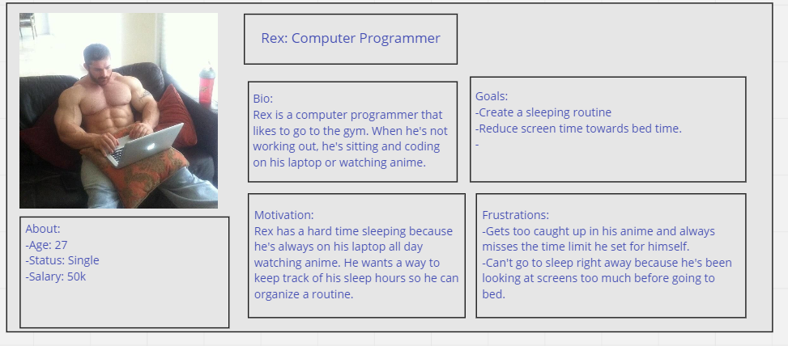Stacy is a yoga instructor and a personal trainer who has trouble making a workout routine for her clients. She wants to facilitate this problem so that her clients don’t give up healthy habits.
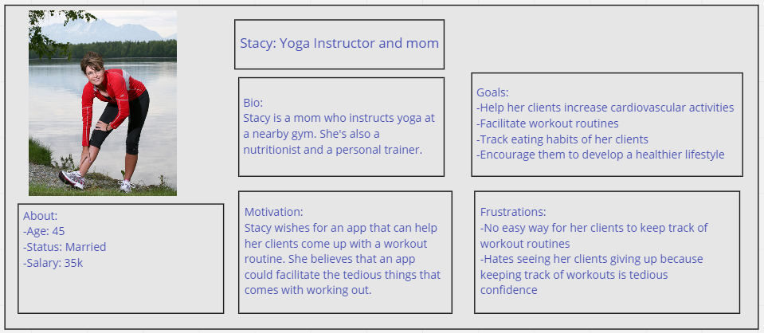Josh is an engineering student who has trouble starting a workout routine because he’s unconfident and overweight. He wants to impress his friends by working out, but has a hard time starting because he can’t find an app that has an easy interface and he has a hard time getting a workout started because he doesn’t know where to start when it comes to working out.
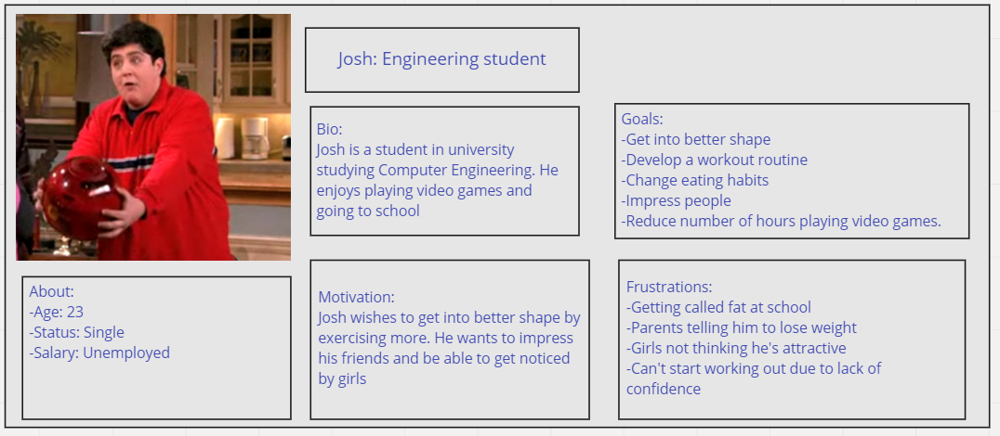Journey Maps
Josh was concerned about navigating through the app at the start. This pain point was solved by adding a small description in the apps page on how to navigate the menu.
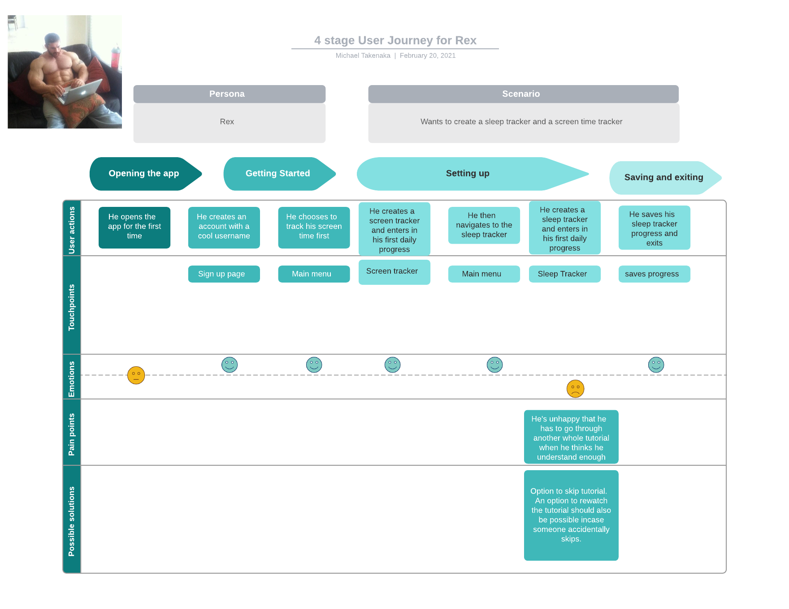Stacy had trouble using the app as she hasn’t used too many apps before. This pain point was resolved by adding a tutorial upon choosing one of the 4 options in the menu.
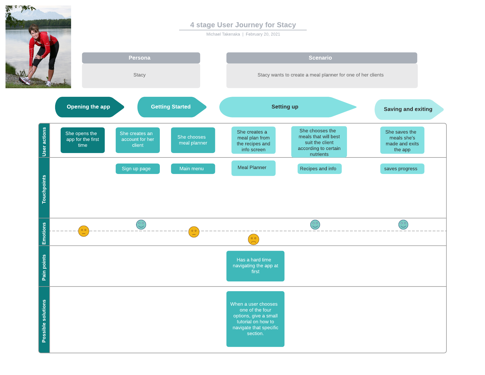Rex’s pain point occurs because he’s frustrated that he can’t skip the second tutorial. He believes that he will already know how to navigate the sleep tracker given that he’s already used the screen tracker. This is resolved by allowing the user to skip tutorials should they wish to. The user will be able to access the tutorials again should they need it.
Flowchart
A flowchart is a simple way of showing how the user would be interacting with the apps and which pages lead to which other pages
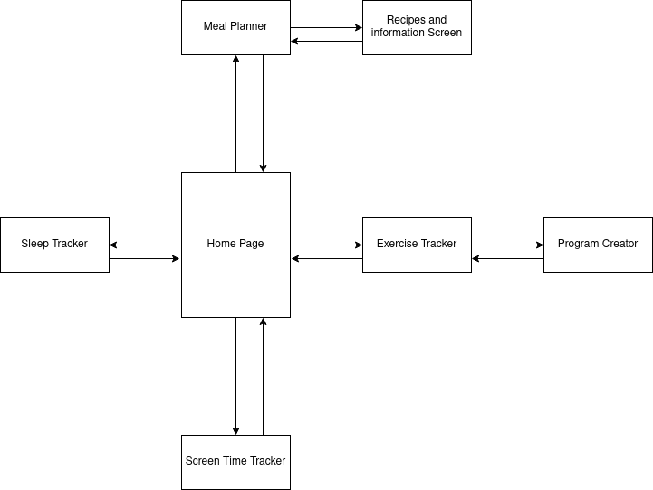
Our Design Approach
We decided that we wanted a no nonsense minimalistic design for the app. Something that goes straight to the point while still being visually appealing.
Sketches
Insert Sketches here
WireFrames
Here are the wireframes:
| The Home Screen | The Meal Planner | Recipe Screen | The Exercise or Workout tracker |
|---|---|---|---|
| 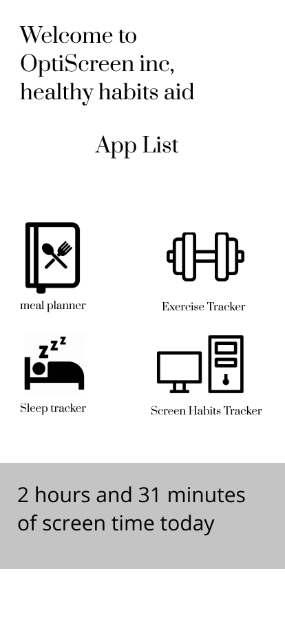 | 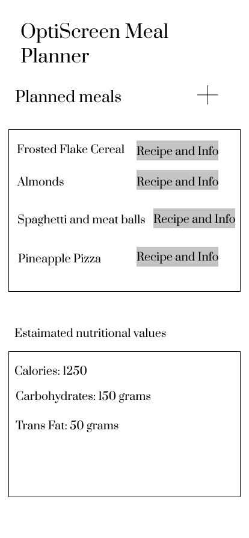 |  |
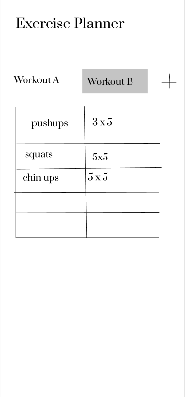 |
| Sleep Tracker | |||
| 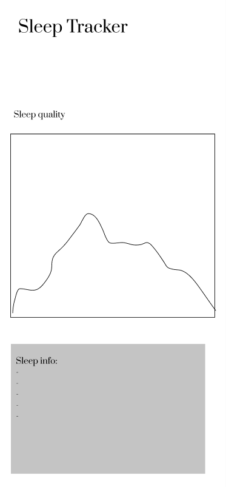 |
Our final design
Insert Final design with explanation of colour choice and font choice
We chose that our pages would be appealing to look out while staying fairly neutral. So we chose a shade of blue that goes by the following colour code:
5698c9
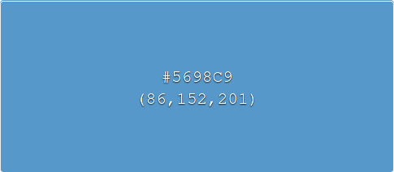
as well as plain white and black to keep it as simple as possible.
We used the font family of Source Code Pro by Paul D. Hunt.
You can get the font here
It is also the font used on this demo website.
Here are the prototypes for the final design, we decided to simply some things even further from the wireframes. The designs are straight forward enough.
The + sign in the workout tracker allows you to create a new workout which will clear the workout screen and it will allow people to fill in the table of
the exercises and the sets/reps they want to add. The edit button will allow them to add/remove exercises from the selected workout or delete it completely.
The + sign in planned meals allows you to add an extra meal in your planned meals and the app will search and pull the recipes and ingredients from the internet.
Here are the prototypes:
| The Home Screen | The Meal Planner | Recipe Screen | The Exercise or Workout tracker |
|---|---|---|---|
| 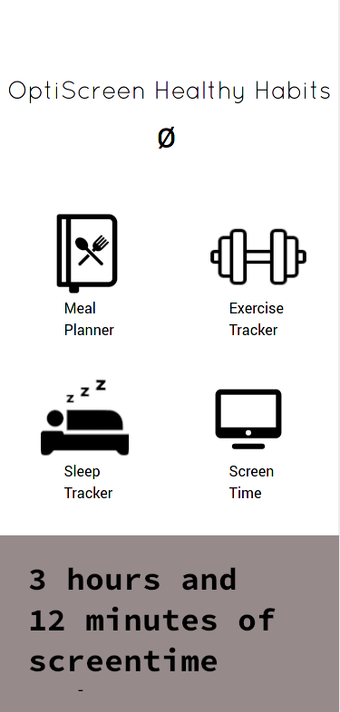 | 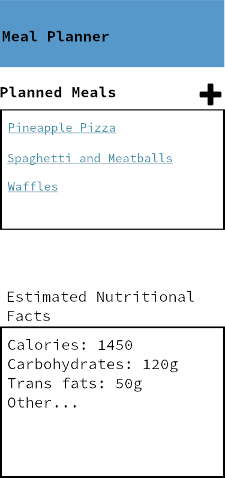 | 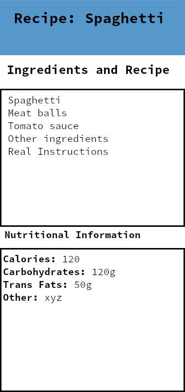 | 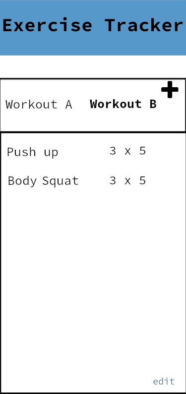 |
| Sleep Tracker | |||
In conclusion,
we have gotten a glimpse from this assignment the complexities and difficulties of UI design, it is truly difficult to come up with something ground breaking that is going to be universaly appreciated (or almost). Effectively, to do our best work it required that we survey and analyze data that comes with people who are naturally fickle beings. It may come to pass that are designs become disliked over time.